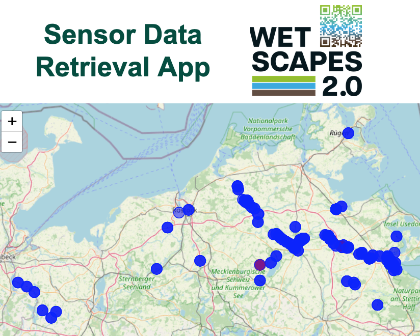
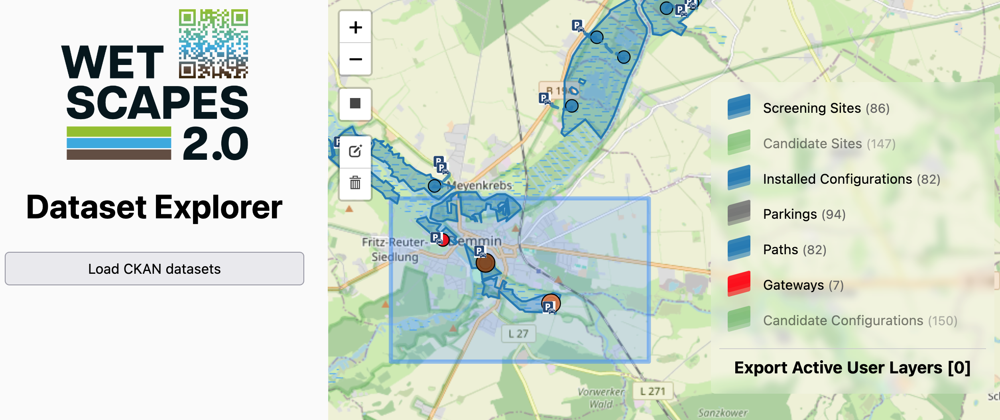
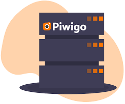

Short description: fdsfsd
Link: Open App
Short description: This instance of InfluxDB, hosted at the University of Rostock, stores our raw sensor data.
Access: restricted to the consortium members
Link: Login

Short description: This app enables the harmonized (i.e., human-readable) visualization and extraction of sensor data by combining raw data from our InfluxDB instance at the University of Rostock with metadata from the GFZ Sensor Management System.
Latest Version: 1.2
Access: restricted to the consortium members
Link: Open the App

Short description: This app allows the spatial and temporal access to datasets. The core combines QFieldCloud points and polygons, hosted at the University of Rostock, with the retrieval of CKAN datasets, archived at the University of Greifswald.
Latest Version: 1.0
Access: restricted to the consortium members
Link: Open the App

Short description: This servers stores photos used for field samplings, research purblications, and public relations. It is hosted at the University of Rostock.
Access: restricted to the consortium members
Link: Open the Server
Short description: fdsfsd
Link: Open App